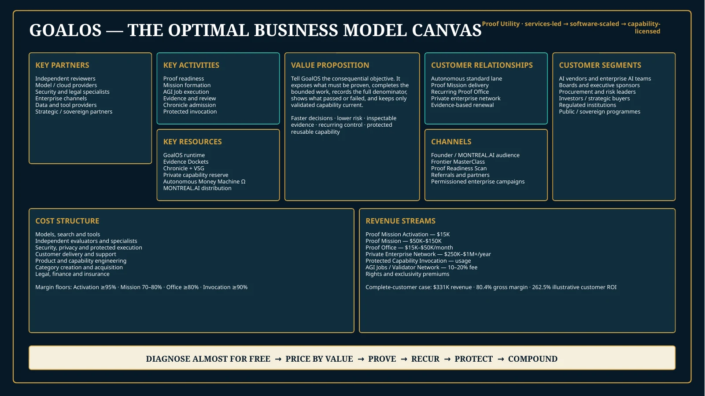

MONTREAL.AI × GoalOS · Modèle économique optimal
LE MODÈLE QUI CONVERTIT UNE MISSION EN INSTITUTION
GoalOS est déployé comme une Proof Utility menée par les services, mise à l’échelle par le logiciel et monétisée par la licence de capacité. Les chiffres sont des hypothèses de gestion modifiables, pas des prévisions.

La décision
Diagnostiquer presque gratuitement. Facturer la preuve. Convertir la preuve en contrôle récurrent. Protéger la capacité.
SCAN→ACTIVATION→MISSION→OFFICE→CHRONICLE→INVOCATION↺
Échelle de revenus
Une relation client complète crée valeur immédiate, contrôle récurrent et capacité réutilisable.
| Étape | Prix indicatif | Rôle | Économie cible |
|---|---|---|---|
| Proof Readiness Scan | Gratuit–495 $ | Acquisition / qualification | Coût marginal négligeable |
| Proof Mission Activation | 15 k$ | Porte d’entrée payée | 93–98% GM hypothesis |
| GoalOS Proof Mission | 50–150 k$ | Valeur client + capacité | 70–80% GM hypothesis |
| GoalOS Proof Office | 15–50 k$/mois | Récurrence et contrôle | 75–90% GM hypothesis |
| Protected Capability Invocation | Usage / licence | Économie logicielle | 90%+ mature GM hypothesis |
| AGI Jobs / Validator Network | 10–20% take-rate | Économie de réseau | À valider |
Les prix, marges et volumes sont des hypothèses de gestion à tester. Aucun résultat, marge ou rendement n’est garanti.
Scénario de gestion
Le modèle relie acquisition, missions, Bureaux, invocation, réseau, trésorerie et liquidité.

1,4 M$FY1 revenue scenario
16,6 M$FY3 revenue scenario
94,2 M$FY5 revenue scenario
87%FY5 recurring + usage mix
300FY5 rights-cleared capabilities
Scénarios modifiables; non audités; aucune prévision, opinion de valorisation ou promesse de performance.
Qualification par la valeur
Le prix vient de la valeur en jeu, du coût de l’erreur et de la charge de preuve — pas des heures humaines.
Valeur / frais—
ROI—
Bénéfice net—
Utilisez seulement une valeur attribuable prudente. Séparez scénario, engagement, observation, vérification et réalisation.
Série décisionnelle
Tous les documents nécessaires pour exploiter, financer, vendre et falsifier le modèle.
01
Executive BriefOuvrir / télécharger
→02Strategy MemorandumOuvrir / télécharger
→03Commercial & Pricing PlaybookOuvrir / télécharger
→04Investor & Board DeckOuvrir / télécharger
→05Five-Year Financial ModelOuvrir / télécharger
→06Business Model CanvasOuvrir / télécharger
→0790-Day Launch PlanOuvrir / télécharger
→